NEW ALBUM "ORDINARY" | NEW SONG - CHARMER
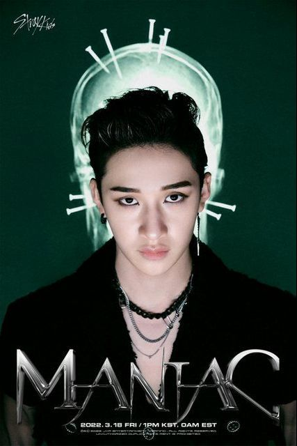
Бан Чан - лидер, ведущий вокалист, рэпер, продюсер

Чанбин - главный рэпер, саб-вокалист, лирик, продюсер
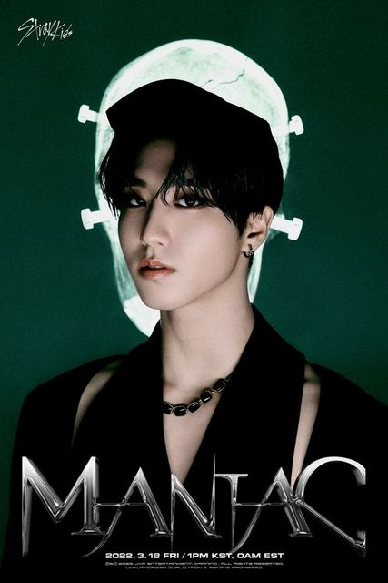
Хан - главный рэпер, ведущий вокалист, лирик, продюсер

Ли Ноу - главный танцор, саб-рэпер, саб-вокалист
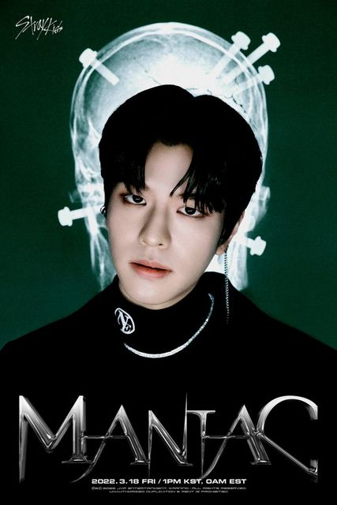
Сынмин - главный вокалист
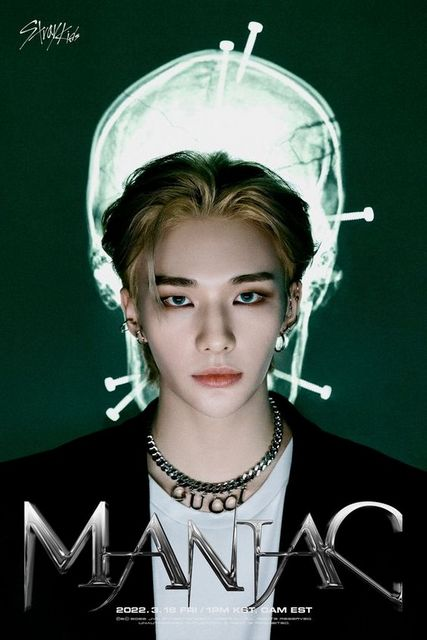
Хенджин - ведущий рэпер, ведущий танцор, саб-вокалист, вижуал
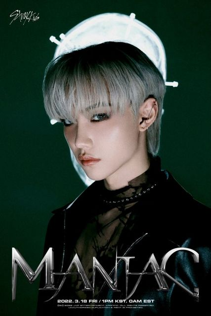
Феликс - ведущий танцор, ведущий рэпер, саб-вокалист, лицо группы
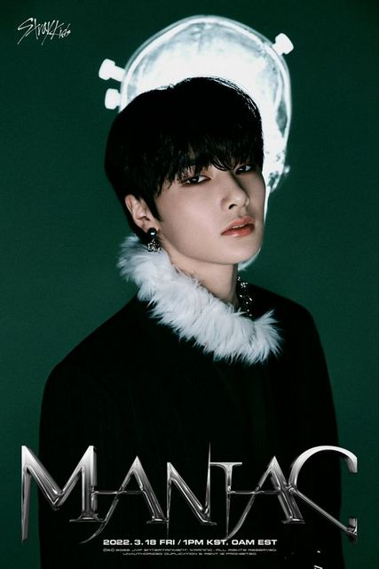
Аиен - ведущий вокалист, макнэ (самый младший участник)
Stray Kids
Stray Kids - мужская группа компании JYP Entertainment. Они были сформированы через одноименное реалити-шоу Mnet.
Их первый пре-дебютный альбом Mixtape был выпущен 8 января 2018 года, а их официальный дебют состоялся 25 марта 2018 года с мини-альбомом I Am Not.
полностью пишут и самостоятельно
записывают музыку
Победа на шоу KINGDOM
Самый младший участник 2001 г.р
Самый старший - 1997 г.р
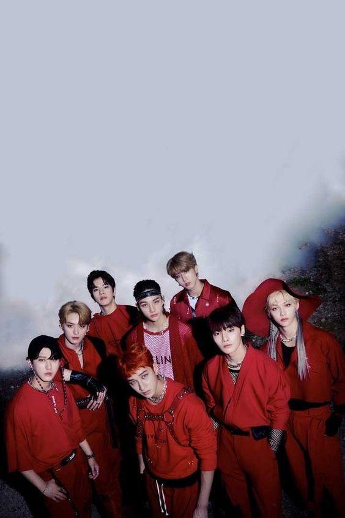
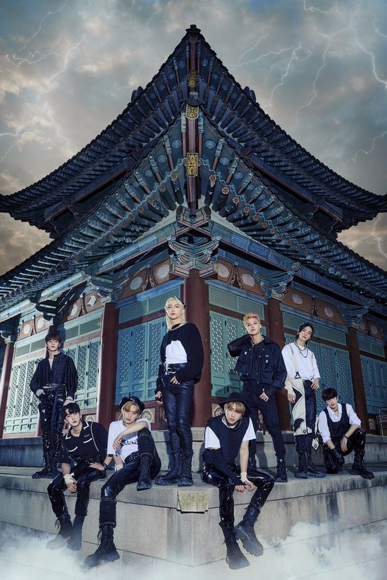
Безусловной фишкой группы, помимо захватывающих клипов, яркой хореографии и
качающей музыки, является голос одного из участников - Феликса. Несмотря на свою миловидную
внешность, его отличает от других корейский поп-исполнителей глубокий низкий бархатистый голос. Это
сразу же стало визитной карточкой группы
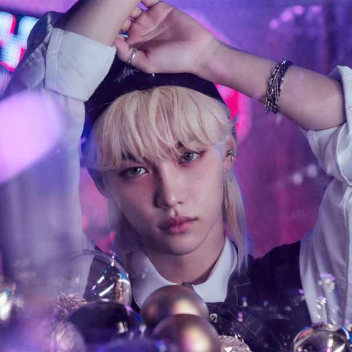


Last favorite tracks
- Maniac
- Charmer
- Thunderous
- Back Door
- God's Menu
- Red lights
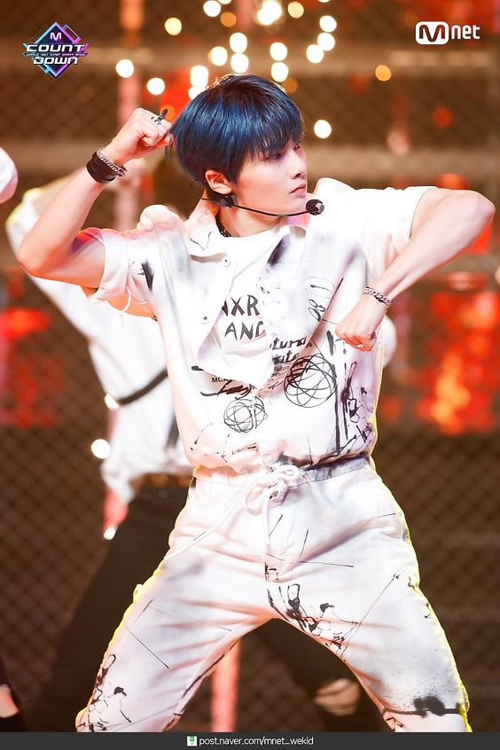
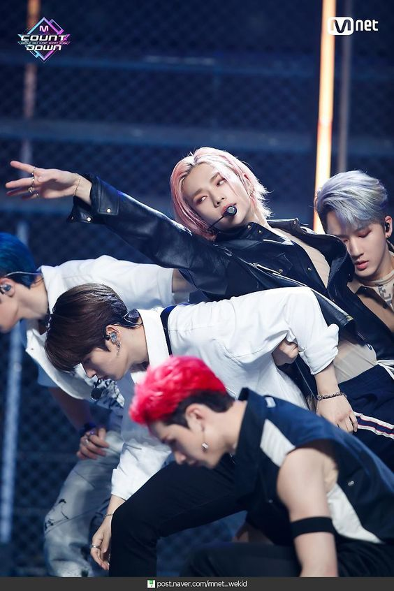
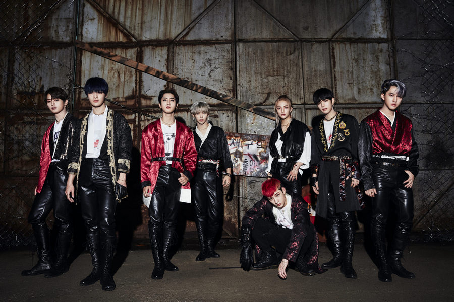
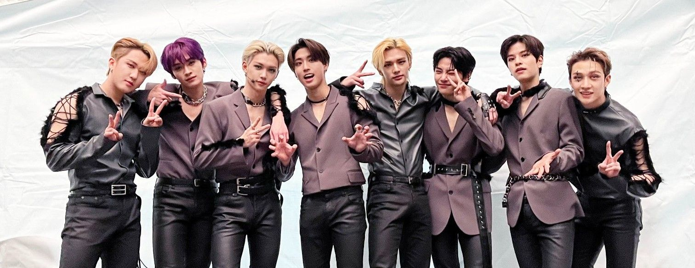